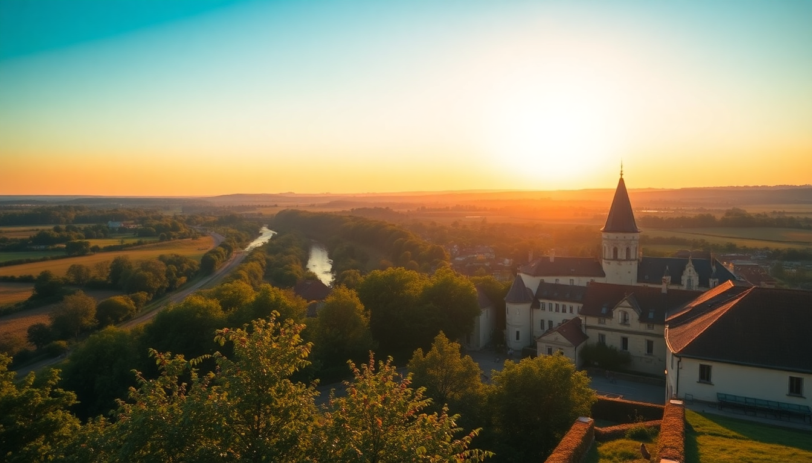

Best Time to Visit the Loire Valley: A Seasonal Guide

I’ve driven the Loire Valley in every season, and each time it feels like a different country. Summer brings relentless crowds at Château de Chambord, but winter lets you walk through the same halls nearly alone. This guide covers what to expect month by month—weather, crowds, and which châteaux to prioritize—so you can book the right dates for your style.
When is the best overall time to visit the Loire Valley?
Late spring (May–June) and early autumn (September–October) hit the sweet spot. The weather is mild, gardens are in bloom or turning color, and the crush of August tourists hasn’t arrived or has already left. We visited in mid-May last year and had sunny 22°C days at Château de Chenonceau with manageable queues.
- May–June: Rose gardens at Château de Villandry are at their peak. Fewer crowds than July.
- September–October: Harvest season in Vouvray and Chinon wine regions. Cooler mornings but still pleasant.
- Avoid August if you dislike crowds. Parking lots at Château de Chambord fill by 10 AM.
What is summer like in the Loire Valley?
July and August are hot, busy, and expensive. We stayed at Hôtel Le Choiseul in Amboise one August and regretted not booking dinner earlier—every restaurant along Rue Nationale had a wait. The châteaux run extended hours, but the trade-off is wall-to-wall visitors.
- Château de Chambord: Arrive at opening (9 AM) or skip it for smaller sites like Château d’Ussé.
- Wine tasting: Many domaines in Vouvray close for August vacation. Call ahead.
- River activities: Canoeing on the Cher River near Chenonceaux is a good escape from the heat.
Is spring worth the unpredictable weather?
Yes, but pack layers. March can still feel like winter—we had sleet at Château de Blois one March morning. By April, the tulips at Château de Cheverny’s gardens are out, and the crowds are thin. The real payoff is May, when the Loire à Vélo cycling paths are dry and the valley smells like fresh grass.
- March–April: Lower hotel rates. We booked a room at Hôtel de l’Univers in Tours for €90 a night.
- May: Best month for cycling between châteaux. Rent bikes from Detours de Loire in Tours.
- Bring rain gear. Afternoon showers are common.
What about autumn and harvest season?
Autumn is my personal favorite. The vineyards around Saumur turn gold, and the wine cellars open for tastings without the summer rush. We spent a day in Chinon tasting Cabernet Franc at Domaine de la Noblaie and had the cellar to ourselves.
- September: Grape harvest begins. Join a vendanges experience at Château de Sancerre (just east of the valley).
- October: Mushroom season in the forests near Loches. Try a tour at Château de la Bourdaisière.
- November: Many châteaux switch to winter hours or close. Check schedules for Château d’Azay-le-Rideau.
How is winter in the Loire Valley?
Winter is quiet, cold, and cheap. We visited in early December and had Château de Chenonceau almost to ourselves. The indoor attractions—like the Musée de la Marine de Loire in Orléans—become more appealing. Some restaurants in smaller villages close for the season, so stick to Tours or Amboise for reliable meals.
- December: Christmas markets in Tours and Blois. The Château de Chambord hosts a holiday light show.
- January–February: Lowest prices. We paid €75 a night at Hôtel de France in Blois.
- Heating tip: Old châteaux are drafty. Wear thermal layers inside.
Should I visit during a festival or event?
If you can time it, yes. The Loire Valley has several events that add value without the peak-season chaos.
- Fête des Jardins (May): Gardens at Villandry and Cheverny open for special tours.
- Les Nuits de Sologne (August): Night tours and fireworks at Château de Chambord.
- Marché de Noël (December): The market in Tours’ Place Plumereau is lively and local.
FAQ
Is the Loire Valley worth visiting in July? Yes, but only if you plan around the crowds. Book château tickets online in advance—especially for Château de Chambord and Château de Chenonceau. Start your day early (before 9 AM) and use lunchtime for smaller sites like Château de Langeais.
What is the cheapest month to visit the Loire Valley? January and February. Hotels in Tours and Amboise drop to winter rates—we saw rooms at Hôtel de l’Univers for under €80. Many châteaux are open but on reduced hours, so check ahead. The trade-off is cold weather and shorter days.
Can I cycle the Loire Valley in November? It’s possible but not ideal. The Loire à Vélo paths remain open, but temperatures hover around 8–12°C, and rain is common. Stick to the section between Tours and Saumur, which has more cafes and rest stops. Bring waterproof gear.
Conclusion
- Best months: May, June, September, and October for weather and manageable crowds.
- Budget travel: January, February, or November for low hotel rates and empty châteaux.
- Avoid August unless you’re prepared for peak prices and packed parking lots.
- Book château tickets online for Chambord, Chenonceau, and Azay-le-Rideau in high season.
- Pack for layers no matter the month—the Loire weather changes fast.